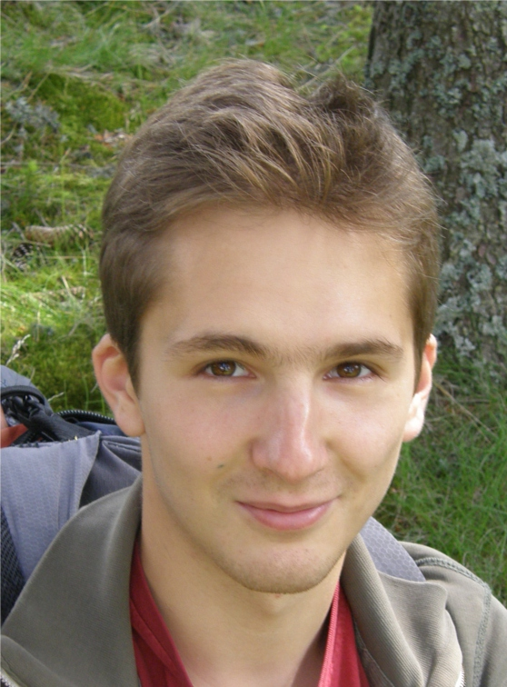
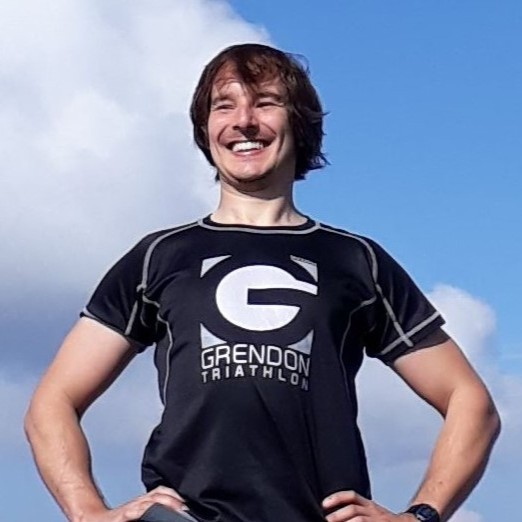

An Analysis of AN IMAGE IS WORTH 16X16 WORDS :
Describe the paper and the big question about it that interests you.
Literature Review
The main motivation of behind ViT was the success of using Transformers for NLP tasks. The dominant approach of pre-training the model on large dataset and fine-tuning by small task-specific datasets (BERT and GPT) was limited to textual data, as directly applying self-attention mechanism to pixels was computationally intractable due to very large input size (image pixels). Often attention mechanism was considered in conjunction with convolutional layers.
Some attempts had been made to make the self-attention mechanism work for images:
- Replacing global self-attention with just local, neighboring pixels:
- Image Transformer (Parmar 2018)
- Stand-Alone Self-Attention in Vision Models (Ramachandran 2019)
- Exploring Self-attention for Image Recognition (Zhao 2020)
- Approximations to global self-attention:
- Sparse Transformers (Child 2019)
- Applying the attention mechanism for just rows/columns:
- Axial attention in multidimensional transformers (Ho 2019)
Many of these specialized attention architectures above demonstrated promising results on computer vision tasks, but require complex engineering to be implemented efficiently on hardware accelerators.
Most significant and similar work to ViT was On the Relationship between Self-Attention and Convolutional Layer (Cordonnier 2020). Key finding: "we prove that a multi-head self-attention layer with sufficient number of heads is at least as expressive as any convolutional layer". However, the paper lacked the evaluation of the method against state-of-the-art models, was limited to 2x2 image patches that hindered the scalability and thus only worked on small resolution images.
The authors of the paper built on top of their prior work Big Transfer (BiT) on CNN transfer learning (Kolesnikov 2020 and Djolonga 2020), comparing the approach already done on ResNet to the Transformer architecture.
Biography
This team doesnt have well known names in it, However they are highly motivated researchers working at
Google interested in applying deep learning techniques to vision related tasks.
Some members are now at different research groups but have collaborated together frequently in the past.
Another major research they conducted was "Scaling Vision Transformers to 22 billion parameters".
Most of the researches in this study work on scaling deep networks for vision tasks.
| Name | Photo | Affiliation | Contribution |
|---|---|---|---|
| Alexey Dosovitskiy |  | Google Research | Ex Intel, left Google for an year to setup Inceptive with Jakob, recently returned back. PhD in Mathematics from Lomonosov Moscow State University. |
| Lucas Beyer | Google Research | Co-author, involved in the exploration and experimentation with Vision Transformers.French- German national from Belgium with PhD from RWTH Aachen. | |
| Alexander Kolesnikov | Google Research | Previously PhD at IST Austria, and applied math MSc at Moscow State University. | |
| Dirk Weissenborn | Inceptive Inc. | Based out of Germany, Ex-Google, Meta, DeepMind. | |
| Xiaohua Zhai | Google Research | Seniour Staff Researcher based out of Zurich. PhD from Peking University, China. Interested in vision, representation learning and generative modelling. | |
| Thomas Unterthiner | Google Research | ML Engineer , PhD from Johannes Kepler Universitat, Germany. Research interests include Compuational Biology, understanding deep networks, activation functions, emaluation metrics | |
| Mostafa Dehghani | Google Research | Research Scientist, Ex-Apple. PhD from University of Amsterdam. | |
| Matthias Minderer | Google Research | PhD from Harvard under Christopher Harvey, Ex Neuroscience Major at ETH Zurich, also studied Biochemistry at University of Cambridge . Interested in representation learning of vision tasks. | |
| Georg Heigold | Google Research | Diploma in Physics from ETH Zurich. His research interests include automatic speech recognition, discriminative training, and log-linear modeling. Ex-Apple | |
| Sylvain Gelly | Independent Researcher / Google Research | Deep learning Researcher based out of Zurich. Likes to work on reinforcement learning and dynamic programming. | |
| Jakob Uszkoreit | Co-founder @ Inceptive | One of the authors of the original transformer paper, Maybe one of the most cited authors on this panel. Ex Googler. | |
| Neil Houlsby |  | Google Research | PhD in Computational Biology from University of Cambridge. Research interests include Bayesian ML, Cognitive Science and Active Learning. |
Novel Work by the Paper (Diagrammer)
Transformers had been recently proposed by Vaswani et al in [2] and had become
state of the art for language related tasks. The authors of this paper wanted to come up with a solution
which was as close as possible to the original Transformer so that other language based approaches to scale
the architecture could be used out of the box.
Hence, they chose to use the same architecture setup as done by the authors in [2].
However, as the original Transformer requires a 1D sequence of tokens, the authors had to figure out a way to
convert an image, which is 2-Dimensional, into a 1-D sequence of information.
In order to solve this, the input images (of dimension H and W) were reshaped into N
patches of size P,
where in N was calculated by computing HW ⁄ P2. The output of this operation were
described as patch embeddings.
Similary to its natural language counterpart which uses BERT's [class] tokens, it was essential to prepend a
learnable embedding to
the patch embeddings whose state at the output of the Encoder block could be used as the image
representations.
The transformer architecture is a suitable architecture for language related tasks as they are rich in
sequence and the architecture adds encodes the position of text
along with the text as position embeddings. These positional embeddings are key to the architecture. In order
to mimic this charachterstic in vision, positional embeddings
are added into the patch embeddings which help retain position information of the patches. The resulting
embedding vector is used as input to the encoder block of the transformer.
The Vision Transformer architecture
Up until this time, CNNs based architectures achieved state-of-the-art performance of vision tasks due to
their wonderful ability to have robust neighbourhood structure
and translational equivaraince, however, as the network grew deeper they were prone to information loss.
Residual Connections mitigated this to some extent.
However, the transformer block consists of MLP units which capture local and translational equivaraince and
the Attention units are focused on capturing global context.
This ability to inherintly capture local as well as global context make the transformer architecture solve
The original architecture consists of alternating layers of multihead self-attention (MSA) and MLP blocks with
LayerNorm and Residual Connections being applied after every block. Mathematically, the layers can be
described as shown in equation 1
As the transformer block does not have any CNN layers which may lead to neighbourhood structure being learnt, the model instead learns the 2D positions as well as the spatial relations of the patches making it free of any sort of inductive bias. Furthermore, the authors propose another way to generate patchh embeddings by using a CNN feature map to extract patches instead of generating raw patches.
The variants of the ViT architecture follow the ones from BERT:
Comparing to state-of-the-art models on popular image classification:
Pre-training data and computation requirements compared to BiT:
Some lower layer attention heads behave like convolutional layers, focusing on local patches, while others have a more global view:
The authors have experimented with different positional embeddings, curiously, explicitly including 2-D information in them does not improve performance, as the model learns to encode it implicitly:
Using Attention Rollout to visualize the attention maps show that the model learns to attend to the semantically relevant parts of the image:
Social Impact
Independent of paper, personal research by Gega.
Industry Applications
Due to the rich latent space that vision transformer learn, this architecture was quickly adopted in the industry and has become one of the most used architectures for production grade ML models. Some of the industries which use Vision based transformers are :
- Autonomous Vehicle: It is highly speculated that Tesla's Full Self-Driving software uses a Vision transformer based architecture as its backbone. Similary Nvidia's self driving car platform as well is rumored to have a transformer based backbone!
- Medical Imaging
- Augumented Reality
Follow-on Research
This study was the first to bring the transformer architecture to vision which soon became one of the most popular methods. This led to various aspects of the model being subjected to improvement. A few areas of research which have led to significant improvements in the transformer architecture are
-
The authors of this paper are really interested in scaling the models, they leverage the power laws and
propose structural changes to the
architecture which results in the following research Scaling
Vision Transformers
- Since then many studies have tried to make the architecture more efficient, some of which are
- Many attempts have been made to introduce add convolutions to the transformer blocks in order to make the model more efficient and robust. Some significant approaches are:
- Liu et al propose the Swin Transformer which leverages a heirarchical transformer whose representation is computed with shifted windows which limits self-attention to non-overlapping local windows and instead uses cross attention for global context.
Peer Review
Independent of paper, personal research by Aditya.
Optionally, in addition to a reading-based analysis, implement the ideas of the paper in code, and report on your findings.
References
[1]
Dosovitskiy, Alexey, et al. "An image is worth 16x16 words: Transformers for image recognition at scale."
arXiv preprint arXiv:2010.11929 (2020).
[2]
Vaswani, Ashish, et al. "Attention is all you need." Advances in neural information processing systems 30
(2017).
Team Members
- Aditya Varshney
- Gega Darakhvelidze